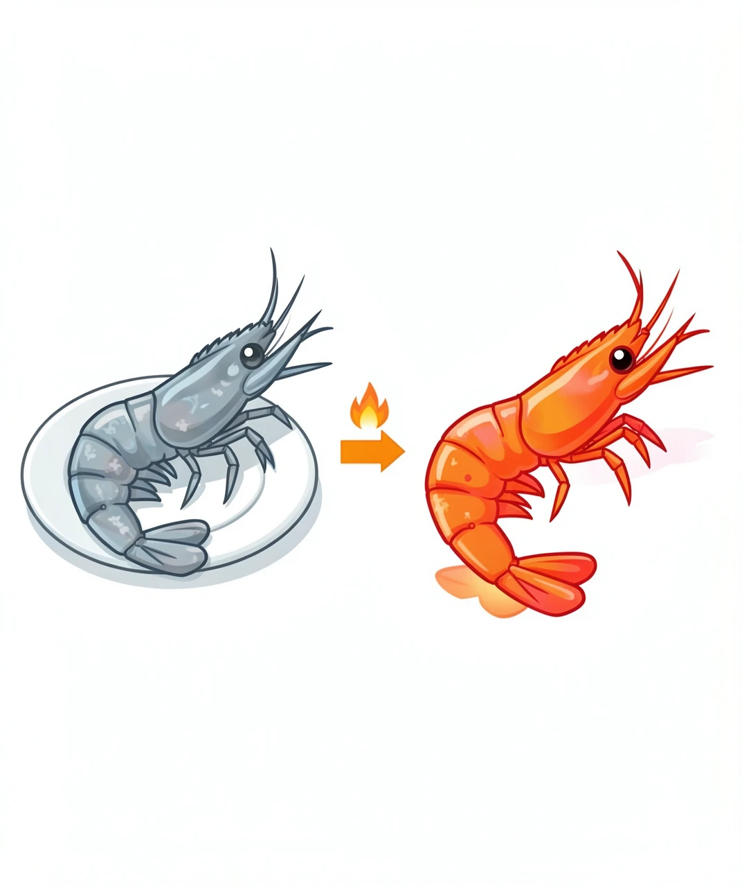
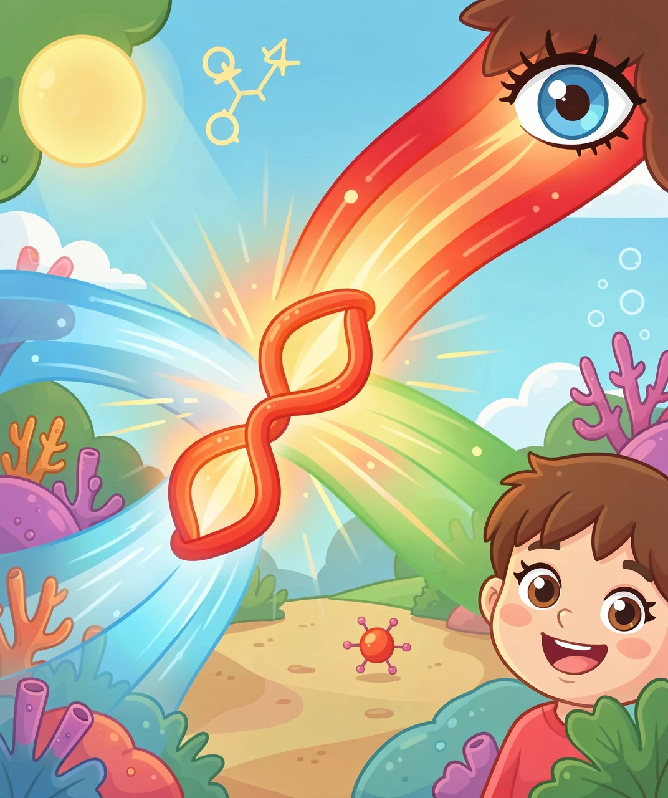
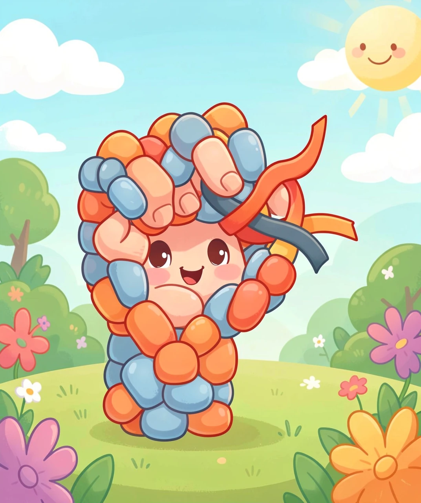
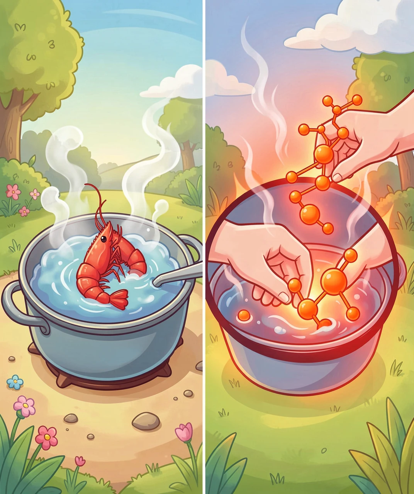
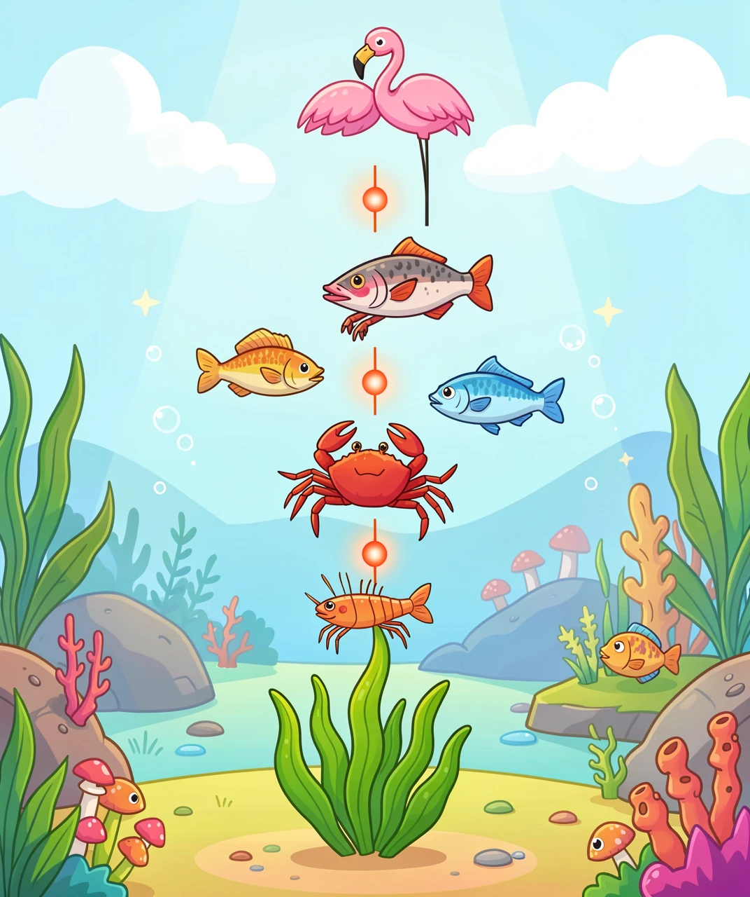

答案可能跟你想的不一样：红色一直就在壳里，只是被"藏"起来了
活着的虾是青灰色的，螃蟹是青褐色、墨绿色的。扔进锅里煮几分钟，捞出来全变成鲜艳的橙红色。
很多小朋友会猜：是不是火把壳"烤"红了？或者虾壳里发生了什么化学反应，造出了红色？
都不是。真相更有意思——那个红色一直在壳里，只是被藏起来了。加热做的不是"染色"，而是"松手"。
我们一层一层看。

要弄懂变色，得先弄懂颜色到底是什么。
白色的阳光里其实混着所有颜色（彩虹的颜色全在里面）。当一个东西看上去是红色时，不是因为它"发出了红光"，而是因为它把别的光都吃掉了，只剩下红光弹回你眼睛。
所以：你看到的颜色，是"没被吸收掉"的那部分光。
那什么东西负责"吃掉"光？是分子。而一个分子会吃掉哪些光，取决于它长什么样——尤其是里面电子能"跳"到多高的台阶上。
记住这句话，它是整篇文章的钥匙：分子的形状一变，它吃掉的光就变，我们看到的颜色就跟着变。
虾蟹壳里的红色素有个名字，叫虾青素（astaxanthin）。别被"青"字骗了，它本来的颜色是橙红色。
虾青素属于一个大名鼎鼎的家族，叫类胡萝卜素。这个家族你餐桌上天天见：
🥕 胡萝卜的橙 → β-胡萝卜素
🍅 番茄的红 → 番茄红素
🎃 南瓜的黄 → 叶黄素类
🦐 虾蟹的橙红 → 虾青素
它们长得都很像：一条长长的碳链，上面交替着单键和双键（化学家叫"共轭双键"）。这种结构特别擅长吃掉蓝光和绿光，剩下的红橙光就弹出来了——于是我们看到橙红。
到这里问题来了：既然虾青素本来就是橙红的，那活虾为什么是青灰色的？

这是最关键的一层。
在活虾活蟹的壳里，虾青素不是自由自在地飘着，而是被一种蛋白质紧紧抱住，形成一种叫 甲壳蓝蛋白 的复合体。
蛋白质是个"大手"。它一把抓住虾青素，会把它掰弯、扭成另一个形状。还记得第一层的钥匙吗——形状一变，吃掉的光就变。
被掰弯之后，这个组合开始吃掉红光和黄光，于是弹回来的光偏向蓝绿和青灰。这就是为什么活虾看起来是青灰色的。
打个比方：虾青素是一根红色的彩带。蛋白质攥紧它、把它拧成麻花，从远处看就是灰扑扑的一团；把麻花松开摊平，红色才露出来。
所以活虾的青灰色，不是"没有红色"，而是"红色被藏起来了"。

现在轮到锅登场了。
蛋白质有个大弱点：怕热。温度升高到一定程度（大约 60℃ 以上），蛋白质就开始变性——它的结构散架、松开，再也抓不住虾青素了。
这件事你肯定见过：鸡蛋清本来是透明的液体，一煮就变成白色的固体——那也是蛋白质遇热散架、重新粘在一起的结果。煮虾和煮蛋，在你眼睛看不见的地方，是同一类变化。
蛋白质一松手，虾青素恢复了自由，回到自己本来的形状，重新开始吃掉蓝绿光、反射红橙光。
红色就"冒"出来了。
顺序也很合理：壳先变红，里面慢慢熟——因为色素就在壳里，热量先传到壳。

最后一层，把视野拉开一点。
虾蟹自己造不出虾青素。动物基本都没这个本事。它们得从食物里吃进来。
链条是这样的：
🌿 藻类自己造出虾青素
↓
🦐 小虾吃藻类 → 色素进了小虾身体
↓
🦀 螃蟹、大鱼吃小虾 → 色素继续往上传递
↓
🦩 火烈鸟吃虾 → 羽毛变成粉红色
🐟 三文鱼吃虾 → 肉变成橙红色
没错，火烈鸟的粉红、三文鱼肉的橙红、虾蟹煮熟的红，背后是同一个分子。你在餐桌上看到的那只红虾，和动物园里那只粉红火烈鸟，共享同一份"颜色食谱"。
如果没有藻类在最底下造这个分子，火烈鸟会是白色的，三文鱼肉会是灰白的，煮熟的虾也不会变红。

1. 颜色不是东西自带的，是"剩下的光"。红的东西不是发红光，是把别的光都吃了，只剩红光弹回来。分子形状一变，吃掉的光就变，颜色就变。
2. 加热做的常常不是"创造"，而是"破坏"。煮虾没有造出红色素，只是把抓住色素的蛋白质弄散了。看见一个新现象，先问"是多了什么，还是少了什么"——这次是少了一只手。
3. 同一个分子，可以出现在完全不相干的地方。虾壳、火烈鸟羽毛、三文鱼肉、深海虾的隐身衣——都是虾青素。学会认"同一个原因"，比记住一百个孤立的知识点有用得多。
（答案：1-B 2-C 3-B 4-D 5-B）